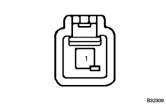
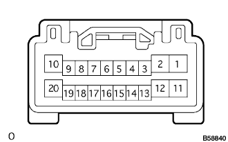

reference)
reference)Even if the power window system operating conditions are removed, it operates after the key is OFF |
reference)| Step 1 | Confirmation of operation after key OFF |
Check the symptoms.
|
| ||||
| A | |
| Step 2 | Front door curtechi lamp switch ASSY inspection |
When the driver's seat door is opened, make sure that the indigeta of the door opening in the room lamp (DOOR) and the combination of the combination sijon meter turns on.
|
| ||||
| NG | |
| Step 3 | Front door curtail lamp switch ASSY single inspection |
|  |
Use SST (Toyota Electrical Tester) to inspect the conduct between 1 terminal ← → body ground.
| Terminal number | Measurement conditions | standard |
| 1 ← → Body Earth | When the shaft is not pushed in | There is an conductor |
| 1 ← → Body Earth | When the shaft is pushed in | Without conduction |
|
| ||||
| OK | |
| Step 4 | Wire harness inspection |
|  |
Mustas Itsuchi Inspection
Cut the mastas ittsuchi connector.
Inspect the voltage of each terminal connector using SST (Toyota Electrical Tester).
| Terminal number | item | Measurement conditions | standard |
| 17 (dtcy) ← → 2 (GND) | Voltage | The driver's seat door is fully closed → Open | 10-14V → 0V |
|
| ||||
| OK | ||
| ||